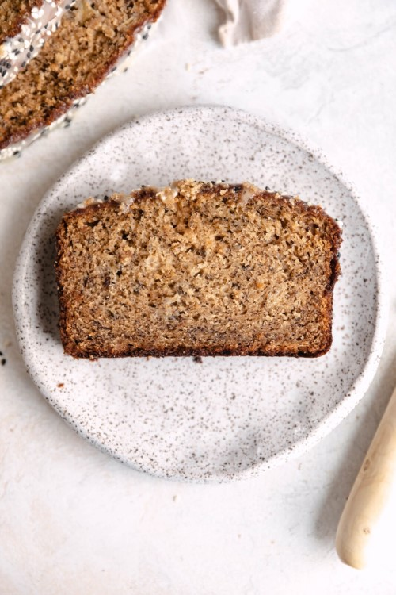

Tahini Banana Bread

Ingredients
- 3 overripe medium bananas, mashed
- 1/2 cup unsalted butter, melted
- 3/4 cup granulated sugar
- 1/4 cup brown sugar
- 2 eggs, room temperature
- 1/2 cup tahini
- 3/4 teaspoon baking soda
- 1 teaspoon salt
- 1 1/4 cups all purpose flour
- 2 Tablespoons of tahini
- 1 Tablespoon cream or milk
- 1 cup powdered sugar
- pinch of salt
- sesame seeds for topping, optional
Instructions
- Preheat oven to 350ºF. Grease a 9 x 5 inch loaf pan and set aside.
- In a large bowl, whisk together mashed bananas with the melted butter, stirring to combine. Add the brown sugar and white sugar. Whisk to combine. Add the tahini and eggs and whisk until fully combined.
- In a separate bowl, combine the flour, baking soda, and salt. Fold the dry ingredients into the wet. Do not over mix! Transfer the batter to your prepare pan.
- Bake for 50 minutes, or until a knife inserted in the center comes out clean. Allow to cool for 15 minutes before removing from loaf pan.
- While the bread cools, make the glaze. In a small saucepan over medium heat, combine the tahini, milk, sugar, and salt and whisk vigorously until smooth and no clumps of sugar remain. Pour the glaze over the warm bread and sprinkle with sesame seeds if desired!